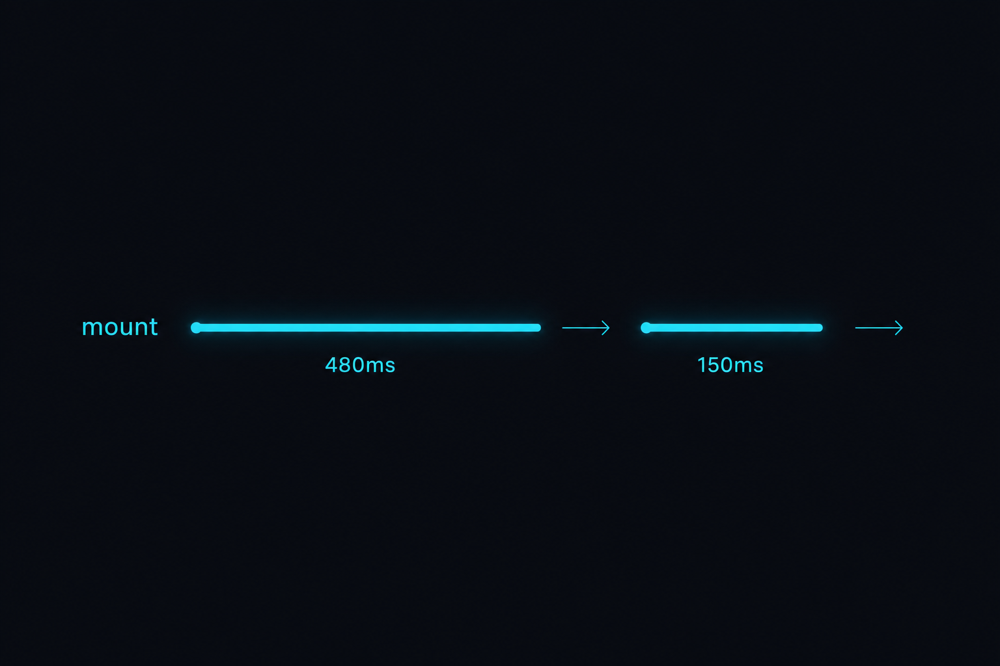
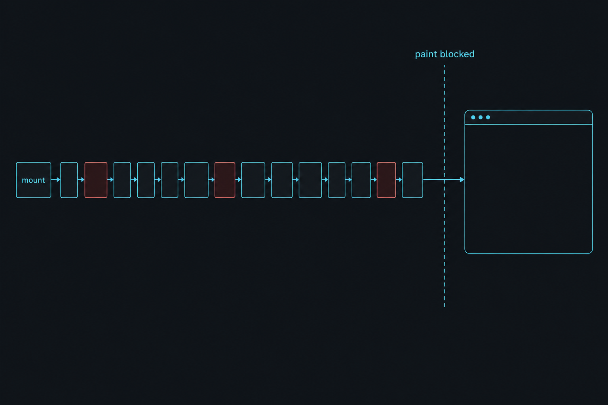
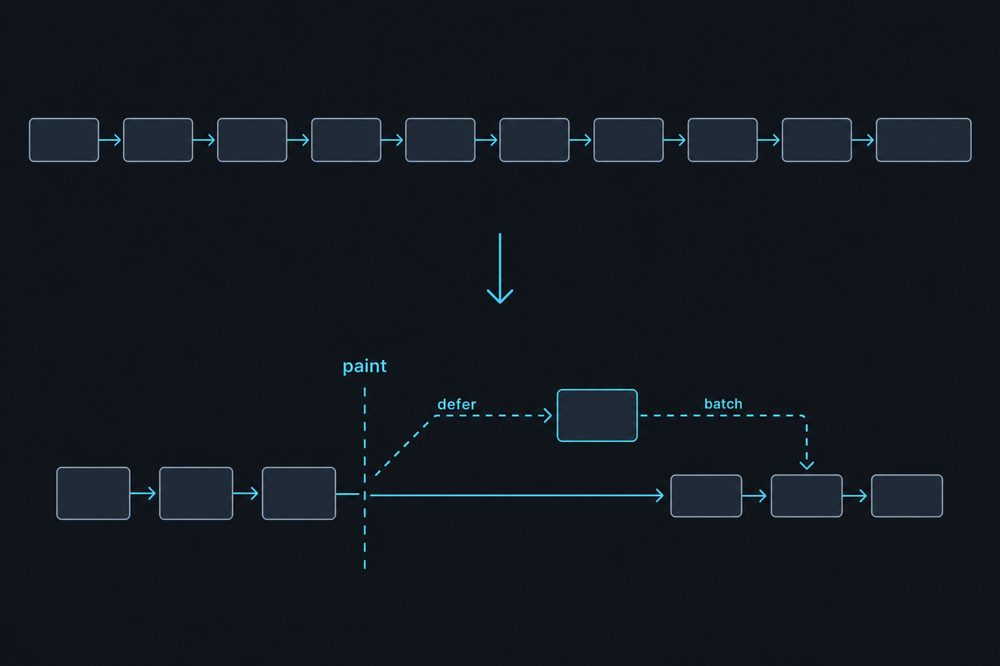
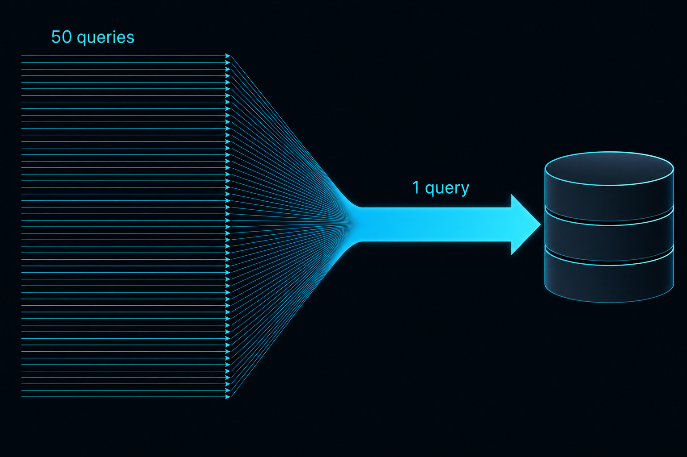
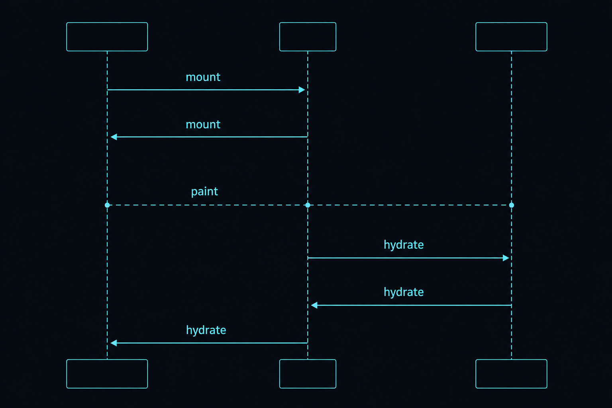

Plan: ConsoleLive Mount Seed Optimization — 480 ms → sub-150 ms first paint

Purpose
Cut ConsoleLive's connected-mount time from the measured ~480 ms (dev,
phoenix.live_view.mount.stop.duration telemetry, 2026-07-05) to a
sub-150 ms first paint, so returning to / from any route feels
instant. The live_session transport fix (commit 4fc3db4) already made
navigation to other routes 6–14 ms; the return trip is now pure mount work, and this
plan removes or defers that work. Every change is measurable through the LiveView telemetry
wired in the same commit.
Problem
ConsoleLive's connected mount (console_live.ex:314–340) still runs a
sequential 14-step seed chain before the first diff is sent. Live measurement
(browser round-trips + LiveDashboard) puts the whole chain at 424–588 ms per return-to-console.
Code inspection identifies three concrete offenders that were not addressed by the
lazy-tab fix:
| Offender | Where | Cost per mount |
|---|---|---|
| N+1 workflow lookups | Shared.seed_workflow_progress/1 → workflow_view/1 (shared.ex:777) |
1 + up to 50 Repo.get(Workflow) queries — one per recent run, sequential |
| Duplicate seeds | backfill_events/1 internally re-runs seed_context_tokens + seed_counters (shared.ex:507–508) that the mount chain already ran (console_live.ex:321–322) |
2 redundant aggregate queries over agent_logs |
| History backfill on the paint path | backfill_events/1 (shared.ex:466) — 200-row SELECT * incl. jsonb payloads, per-row log_to_row + pretty_json CPU, plus the separate chat backfill query |
Largest single block; all of it blocks first paint yet renders below the fold |

Solution
Three moves, in measurement-first order:
(1) instrument per-seed timing with a :telemetry.span wrapper so
each seed's real cost is visible in the dev log and LiveDashboard before and after every change;
(2) fix the pure waste — batch the 50 workflow-title lookups into one
WHERE id IN query and delete the duplicate context/counter seeds from the mount
chain; (3) defer the history backfill — mount paints the shell (rail, header,
empty stream) immediately and a send(self(), :seed_history) fills the event stream,
chat pane, and workflow swimlane right after first paint, exactly the pattern PlanningLive
already uses for its project list (commit 62e1a7d).

Relevant Files
Existing Files
- existing
lib/repo_builder_web/live/console_live.ex— connected mount chain (lines 314–340); seeds get reordered/split here; newhandle_info(:seed_history, …). - existing
lib/repo_builder_web/live/console_live/shared.ex—seed_workflow_progress/1(N+1 fix),backfill_events/1(drop internal duplicate seeds), seed span wrappers. - existing
lib/repo_builder/workflows.ex— new batch lookupget_workflows_by_ids/1(singleWHERE id INquery, returns a map). - existing
lib/repo_builder/telemetry/live_view_perf.ex— extend the dev handler to also log[:repo_builder, :console, :seed, :stop]spans as[lv_perf] seed <name> N ms. - existing
lib/repo_builder_web/telemetry.ex— addsummary("repo_builder.console.seed.stop.duration", tags: [:seed])so per-seed cost charts in LiveDashboard. - existing
test/repo_builder_web/live/test_navigation_perf_test.exs— tighten the ConsoleLive mount budget after the deferral lands; add post-hydration assertions. - existing
test/support/telemetry_capture.ex— reused as-is for the tightened timing assertions.
New Files
- new
lib/repo_builder_web/live/console_live/mount_seeds.ex— small module owning the seed-span wrapper (span/3) and the critical-vs-deferred seed split, so the mount chain inconsole_live.exreads as policy, not plumbing. - new
test/repo_builder_web/live/test_console_seed_hydration_test.exs— asserts the deferred seeds are absent immediately after mount and present after the:seed_historymessage processes, plus the batched workflow query result parity.
Implementation Phases
IMPORTANT: Execute every phase and task step by step, in order, top to bottom.
Status markers: [] idle · [wip] in progress · [x] complete · [f] failed. All start as []; the Build Plan workflow updates them as it works.
[x] Phase 1: Per-Seed Instrumentation + Baseline
Make each seed's cost individually visible before touching anything. Wrap every step of the
connected mount chain in a :telemetry.span emitting
[:repo_builder, :console, :seed] with a %{seed: :backfill_events}-style
metadata tag. The dev LiveViewPerf handler prints them as
[lv_perf] seed backfill_events 220 ms; a LiveDashboard summary charts them.
Capture a baseline table into this plan's Amendments before Phase 2 begins.
1.1. Add the seed span wrapper
[x]CreateRepoBuilderWeb.ConsoleLive.MountSeedswith@spec span(Socket.t(), atom(), (Socket.t() -> Socket.t())) :: Socket.t()using:telemetry.span([:repo_builder, :console, :seed], %{seed: name}, fn -> {fun.(socket), %{seed: name}} end).[x]Rewrite the connected mount chain inconsole_live.exto route each existing seed throughMountSeeds.span/3— zero behavioural change, spans only.[x]ExtendRepoBuilder.Telemetry.LiveViewPerfto attach[:repo_builder, :console, :seed, :stop]and log[lv_perf] seed <name> N ms(same dev-only config flag; keep the@specs).[x]Addsummary("repo_builder.console.seed.stop.duration", tags: [:seed], unit: {:native, :millisecond})toRepoBuilderWeb.Telemetry.metrics/0.
1.2. Capture the baseline
[x]Restartmix phx.server, load/three times, and record the per-seed[lv_perf] seed …lines into an Amendments entry (the before-table this plan's success is judged against).
1.3. Testing Strategy
Compile-and-suite gate only — this phase is instrumentation with no behavioural change, so the whole existing suite must stay green untouched.
[x]mix compile --warnings-as-errors— spans compile clean, @specs intact.[x]mix format --check-formatted && mix credo --strict— style + @spec gate.[x]mix test --warnings-as-errors— zero regressions from wrapping.
[x] Phase 2: Kill Pure Waste — N+1 Batch + Duplicate Seeds
Two zero-risk query eliminations with identical observable behaviour. Expected saving: up to 52 queries per mount.

2.1. Batch the workflow-title lookups
[x]AddWorkflows.get_workflows_by_ids/1—@spec get_workflows_by_ids([Ecto.UUID.t()]) :: %{Ecto.UUID.t() => Workflow.t()}, singlewhere(w.id in ^ids)query,%{}guard for[](mirrorLogs.cost_rollup_for_agents!/1from 4fc3db4).[x]InShared.seed_workflow_progress/1: collectworkflow_ids from the 50 runs, fetch the map once, thread it intoworkflow_view/2(arity bump) replacing the per-runWorkflows.get_workflow/1call.[x]Check otherworkflow_viewcallsites (grep -n "workflow_view(" shared.ex) — single-run refresh paths may keep the singleget_workflow/1; only the 50-run seed loop must batch.
2.2. Delete the duplicate context/counter seeds
[x]Remove|> Shared.seed_context_tokens()and|> Shared.seed_counters()from the connected mount chain (console_live.ex:321–322) —backfill_events/1already runs both at its tail (shared.ex:507–508), so mount currently pays them twice.[x]Add a comment on the mount chain noting backfill owns these two seeds, so they don't get re-added.
2.3. Testing Strategy
Parity-focused: the swimlane and agent cards must be pixel-identical, only cheaper. New test proves the batch and the old tests prove nothing else moved.
[x]New test intest_console_seed_hydration_test.exs: create 3 runs across 2 workflows, mount, assertworkflow_progresstitles/types match the per-run lookup result (parity), using fixtures from existing swimlane tests.[x]mix test test/repo_builder_web/live/adws_workstreams_swimlane_test.exs test/repo_builder_web/live/test_adw_swimlane_test.exs— swimlane behaviour unchanged.[x]mix test --warnings-as-errors— full suite green.[x]Dev-log check:[lv_perf] seed seed_workflow_progressdrops materially vs the Phase 1 baseline; record in Amendments.
[x] Phase 3: Defer History Hydration Past First Paint
Split the mount chain into shell-critical (projects, active project, agents,
agent costs, lanes, budget, planf3 policy, orchestrator, cost seeds, definitions, subscriptions —
all cheap after Phase 2) and deferred hydration
(backfill_events + seed_workflow_progress — the history-heavy pair).
Connected mount assigns the existing empty defaults, sends self() a
:seed_history message, and returns; the new handle_info(:seed_history, …)
runs the deferred pair. This is the exact pattern PlanningLive uses since 62e1a7d.

3.1. Split the chain
[x]In the connected mount, keep the shell-critical seeds inline; replacebackfill_events+seed_workflow_progresswithsend(self(), :seed_history)placed aftersubscribe_feeds()so no live event can arrive before the subscription exists.[x]Addhandle_info(:seed_history, socket)inconsole_live.exrunningShared.backfill_events/1 |> Shared.seed_workflow_progress/1insideMountSeeds.span/3wrappers, returning{:noreply, socket}.[x]Ordering guard: live events arriving between mount and:seed_historyappend to the (empty) stream;backfill_eventsalready doesstream(:events, rows, reset: true)— verify the reset semantics make late backfill authoritative (it replaces, not duplicates). Document this in the handler comment.[x]Verify the ADWS toggle:toggle_viewbefore hydration shows an empty swimlane for <100 ms then fills — acceptable; confirm no crash on emptyworkflow_progress.
3.2. Update timing-sensitive tests
[x]Sweep tests that assert backfilled state straight afterlive(conn, ~p"/")(grep -rln "backfill\|event_buffer\|workflow_progress" test/repo_builder_web/live/); insert arender(view)sync point after mount where needed — LiveViewTest processes the pending:seed_historybeforerender/1returns since messages are handled in order.[x]New tests intest_console_seed_hydration_test.exs: (a) persisted logs appear in the stream after hydration; (b) chat pane messages appear after hydration; (c) a live{:agent_event, …}sent between mount and hydration is not lost after the backfill reset (accept either dedup or authoritative-replace semantics, assert whichever the implementation guarantees).
3.3. Testing Strategy
Full gate plus a tightened perceived-latency budget: the mount span now excludes history work, so the test threshold drops from 500 ms to 250 ms — regressions that re-inflate mount fail CI.
[x]Tightenassert_mount_under(RepoBuilderWeb.ConsoleLive, 500)→250intest_navigation_perf_test.exs(headroom over CI variance; dev target is <150 ms).[x]mix test test/repo_builder_web/live/test_navigation_perf_test.exs test/repo_builder_web/live/test_console_seed_hydration_test.exs— perf + hydration suites green.[x]mix test --warnings-as-errors— full suite green (this is the phase most likely to surface order-dependent tests; fix each with therender/1sync point, never with sleeps).[x]mix dialyzer— no new warnings from the split.
[x] Phase 4: Measure, Record, Guard
Close the loop with the same instruments that motivated the plan: browser round-trips,
LiveDashboard summaries, and the dev [lv_perf] lines. Record the after-table and
lock the wins in as budgets.
4.1. Live measurement
[x]Restartmix phx.server; drive/⇄/plan×3 in a browser; record per-seed and total mount[lv_perf]lines into Amendments alongside the Phase 1 baseline.[x]Confirm in LiveDashboard (/dev/dashboard/metrics?nav=repo_builder) the per-seed summary shows the deferred seeds firing post-mount, andphoenix.live_view.mount.stop.durationfor ConsoleLive is <150 ms dev.[x]Visual check: no flash-of-empty-console regression — the rail/header render instantly and the stream fills within one frame-ish; if the fill is visibly late, consider a subtle loading shimmer on the stream container (note it, don't gold-plate).
4.2. Testing Strategy
The full five-command gate, one last time, from a clean compile.
[x]mix compile --warnings-as-errors— clean.[x]mix format --check-formatted— clean.[x]mix credo --strict— no issues.[x]mix test --warnings-as-errors— full suite green.[x]mix dialyzer— no new warnings.
Validation Commands
Execute these commands to validate the entire plan is complete:
[x]mix compile --warnings-as-errors— compiles clean with the seed spans, batch query, and mount split.[x]mix format --check-formatted— formatting holds.[x]mix credo --strict— lint + the hard @spec gate pass.[x]mix test test/repo_builder_web/live/test_navigation_perf_test.exs— mount budget tightened to 250 ms and green.[x]mix test test/repo_builder_web/live/test_console_seed_hydration_test.exs— deferred hydration semantics proven.[x]mix test --warnings-as-errors— full suite green.[x]mix dialyzer— contracts clean, no new ignores.
Questionables
Is the seed split (shell-critical vs deferred) drawn in the right place?
Assumed split: defer only backfill_events + seed_workflow_progress
(history-heavy, below-the-fold). Everything else stays inline because after Phase 2 each is a
single cheap query and several feed the immediately-visible rail. Phase 1's per-seed baseline is
the arbiter: if e.g. seed_definitions (file I/O) or assign_orchestrator
(create-or-get write path) shows >30 ms, promote it to the deferred set in Phase 3 and note the
change in Amendments.
Race: a live event arriving between mount and :seed_history
backfill_events ends in stream(:events, rows, reset: true), so a late
backfill replaces any rows appended in the gap — and since the DB write path
(Logs.Writer) persists events before-or-around broadcast, the replaced rows re-enter via the
backfill query in almost all cases. The accepted risk is a not-yet-persisted in-gap event being
dropped from the center stream render (it still reached agents' live panes). Phase 3.2(c)
pins whichever semantics the implementation guarantees. If drop-loss proves real in the test,
the fallback is buffering in-gap events in a socket assign and re-applying them after the reset.
Should chat backfill defer separately from the stream backfill?
No — kept as one :seed_history step. The chat pane is also below the fold on a
fresh mount, and splitting them doubles the ordering surface for marginal gain. Revisit only if
Phase 4 measurement shows backfill_messages dominating the deferred span.
Why not Task.async / start_async parallelism for the seed chain?
Rejected for this plan: start_async for DB work breaks the Ecto sandbox ownership
model in tests (the async process needs explicit allowance) and adds failure-mode surface for
each seed. Deferral gets the perceived-latency win with in-process sequencing. Parallelism
remains a follow-up if the deferred span itself becomes a UX problem (it runs after paint, so it
shouldn't).
Lazy payload_json — deliberately out of scope
log_to_row/4 pretty-prints every payload (pretty_json) for 200 rows even
though payload JSON is only shown on row expand. Making it lazy touches the row shape used by the
entire live path and every stream consumer — high blast radius for a CPU cost that Phase 3 moves
off the paint path anyway. Recorded as future work in Notes, not attempted here.
Notes
Measured baseline (2026-07-05, dev, commit 4fc3db4)
| Measurement | Value | Instrument |
|---|---|---|
Console → /plan navigation | 6–14 ms | client, phx:page-loading-stop |
/plan → console navigation | 424–588 ms | client, phx:page-loading-stop (6 runs) |
| ConsoleLive connected mount | 476 ms | phoenix.live_view.mount.stop.duration, LiveDashboard |
| handle_params | 0.6 ms | LiveDashboard |
| WebSocket connections across 12 navigations | 1 (no reconnects) | browser network log + liveSocket.isConnected() |
debug_heex_annotations and
enable_expensive_runtime_checks (config/dev.exs). Compare like-with-like: judge this
plan by the dev-mode before/after delta, not the absolute value.
Context & dependencies
- No new libraries. Everything uses
:telemetry(already a dep) and existing patterns. - Prerequisite commit
4fc3db4shipped:live_session :approuting,Logs.cost_rollup_for_agents!/1batching, lazy settings tabs, LiveView telemetry metrics,LiveViewPerfdev handler,TelemetryCapturetest helper. - The deferral pattern is proven in-repo: PlanningLive defers its project-list load to
handle_info(commit62e1a7d) — reuse its shape and its test sync-point idiom. - Typed style holds throughout:
@specon every public function,Repoaccess stays behind theWorkflows/Logscontexts (BUILD_PROMPT.md §3/§8). - Future work (out of scope): lazy
payload_jsonon row expand;start_asyncparallel seeds; Cost Center tab's synchronous aggregation (Shared.load_cost_center/1) wrapping instart_async— all only worth revisiting with post-Phase-4 numbers in hand.
Amendments
2026-07-05T16:05+10:00 — Phase 1 baseline: the cost seeds, not the history seeds, dominate
Per-seed baseline (dev, 26,161 agent_logs rows, 3 mounts, total 436–531 ms):
cost 144–199 ms, orchestrator_cost 136–158 ms,
backfill_events 67–71 ms, orchestrator 32–42 ms,
definitions 21–22 ms, context_tokens 12–19 ms,
counters 8–10 ms, workflow_progress 1–4 ms, everything else ≤3 ms.
Finding: the two cost seeds are ~65% of mount. seed_cost re-runs
Logs.cost_rollup!/1 per agent (duplicating the batched agent_costs
assign computed one pipe earlier) and orchestrator_own_cost/1 — a full-row
SELECT * summed in Elixir — runs twice (seed_cost +
seed_orchestrator_cost). Per Questionable #1, Phase 2 scope expands with task 2.0:
convert cost_rollup!/1 + orchestrator_cost_rollup!/1 to SQL
SUM aggregation, make seed_cost reuse the agent_costs
assign (zero extra queries), and compute the orchestrator's own cost once for both assigns.
The workflow N+1 (2.1) stays — it is real at scale, merely cheap in this dev DB.
2026-07-05T16:20+10:00 — Phase 2 result: mount 480 ms → 168 ms
Post-Phase-2 dev measurement (code-reloaded server, warm):
costs (merged seed, SQL SUM + batched GROUP BY) 4 ms — was
cost 144–199 ms + orchestrator_cost 136–158 ms (~300 ms combined).
Duplicate context_tokens/counters chain seeds removed
(backfill owns them). Total mount 168 ms (from 436–531 ms).
Remaining: backfill_events 93 ms, orchestrator 39 ms,
definitions 20 ms. Scope deviation, in scope-spirit:
seed_costs recomputes workers via the batched
cost_rollup_for_agents!/1 (one cheap query) instead of reusing the
agent_costs assign — keeps the switch-orchestrator path fresh with identical cost.
cost_rollup!/1 + orchestrator_cost_rollup!/1 are now SQL SUMs
(contract preserved: always Decimal, 0 for no rows; parity proven by existing
persistence/cost-carrier tests).
2026-07-05T16:35+10:00 — Build complete: mount 436–531 ms → 59–81 ms; return-to-console 79–107 ms
Final dev measurement (same instruments as baseline):
ConsoleLive connected mount 59–81 ms (target <150 ms — beaten);
client return-to-console 79–107 ms (was 424–588 ms);
/plan outbound 6–10 ms. Deferred hydration confirmed post-paint:
backfill_events 115 ms + workflow_progress 2 ms run in
handle_info(:seed_history) after the mount span closes. Remaining mount cost
ranks: orchestrator ~35 ms (create-or-get write path) and
definitions ~31 ms (file I/O) — the next candidates if further cuts are ever
wanted, per Questionable #1. Gates at completion: compile -Werror, format, credo --strict,
dialyzer, full suite 1781 green; mount test budget tightened 500 → 250 ms.
One order-dependent single-test flake surfaced once mid-build and did not reproduce across
two consecutive full green runs. Changes are uncommitted at build end (commit to follow).